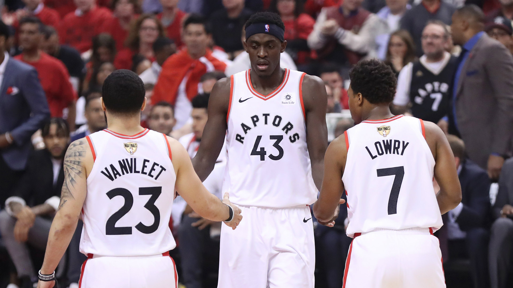
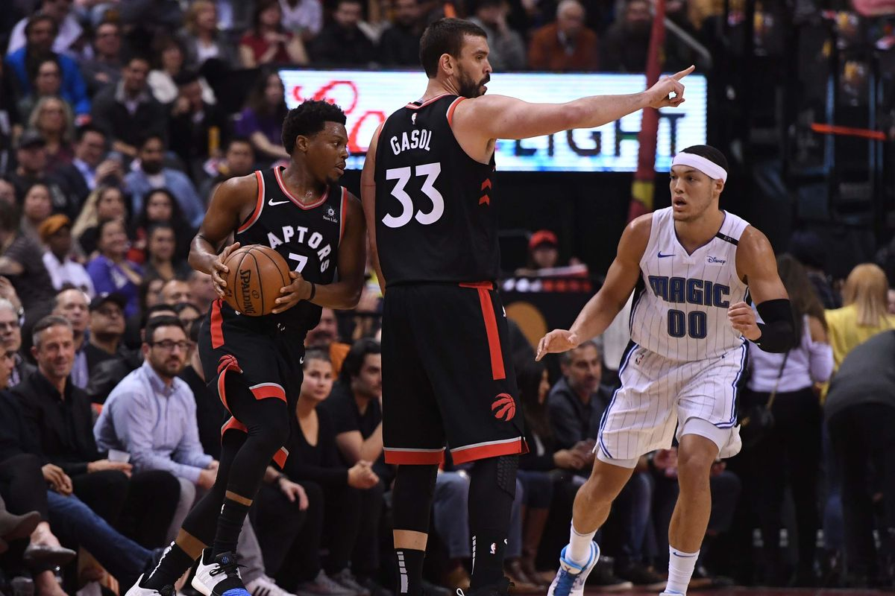
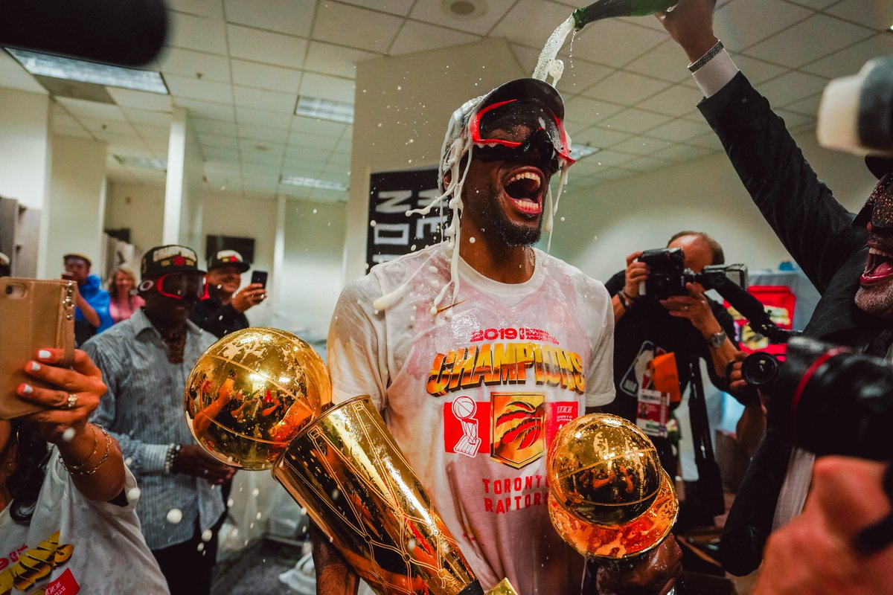
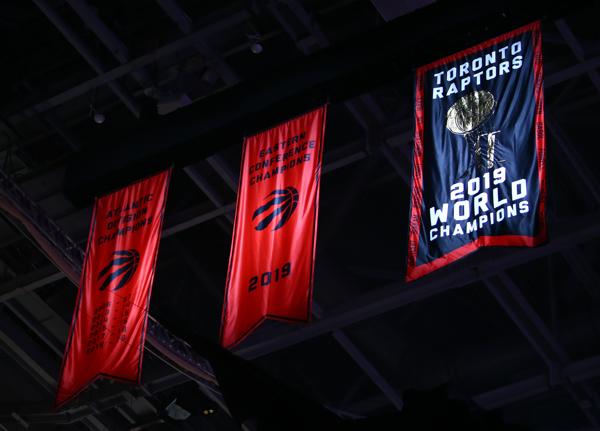
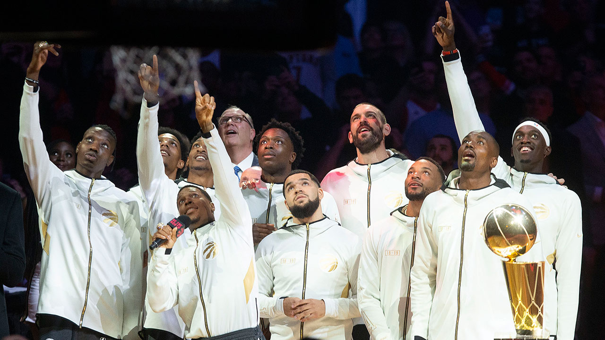
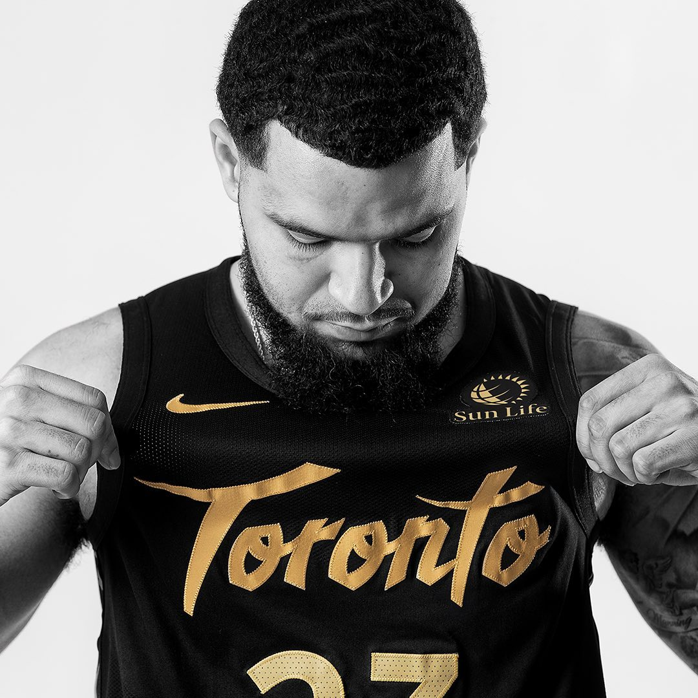

A Brief History: The 2019 NBA Champs.
The tale of the Legendary 18 - 19 Toronto Raptors, and how We The North became We The Champs!
A Timeline
It was time for a breath of fresh air for the Canadian Basketball Team.
After two consecutive post-season sweeps by LeBron James' Cavaliers, change was needed.
Dwayne Casey even won Coach Of The Year! ... Only to be fired for offensive co-ordinator Nick Nurse.
But we didn't stop there - this team needed a superstar. The type of player we can rely on down the stretch to score
when no one else can. DeMar DeRozan was Toronto's beloved star, but fans and MLSE both agreed it was time to move on.
Enter: Kawhi Leonard.

Kawhi's Raptors
Little did fans know going into this season that something special was about to happen. They finished 58 to 24, second in the Eastern Conference.
A net offensive and defensive rating of 5th in the League. Not only did Kyle Lowry operate as the team floor general at the ripe age of 33, but
budding young star Pascal Siakam took a huge leap - to become Most Improved Player!
Before the February trade deadline, the Raptors weren't finished. They wanted to go all-in on this year to win the chip.
They traded away franchise center Jonas Valanciunas for future Hall-Of-Famer DPOY Veteran Memphis Grizzlies Player Marc Gasol
There was only one thing they wanted: A run to the finals!

So, what did second place in the eastern conference get the Raptors in the post-season? Let's see!
Raptors beat the Orlando Magic:
4-1
Raptors beat the Philadelphia 76ers:
4-3
Raptors beat the Milwaukee Bucks for the Conference Title:
4-2
Raptors beat the Golden State Warriors in the Finals:
4-2

Incredible Achievement! Champions of the World! Way to go, Toronto!

Banners are Forever
October 22, 2019 Was the NBA's opening ceremony for the 19-20 season. An exciting season for the Raptors as they seek to defend the title with every game played. Comissioner Adam Silver
made an appearance to award the team with their Championship Rings and present the banners as the Raptors got away with a win that night against the New Orleans Pelicans.

The Future
There's nothing quite like your first Championship. Masai Ujiri is an excellent President and even with the departure of Kawhi Leonard and Danny Green, the team is in a great place!
Who knows, Maybe Pascal Siakam can lead the team to another title very soon!

Here's to the Future. We The North!
The End. Hit Right again to Loop the story.